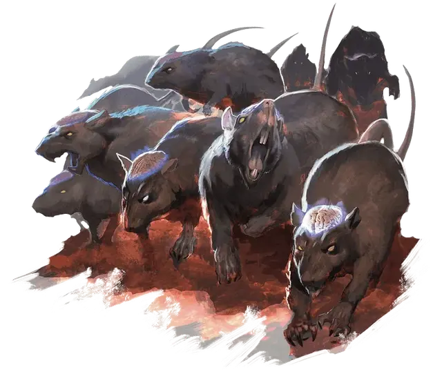

Стая черепных крыс
Swarm of Cranium Rats
Средний рой крошечных Зверей, законно-злой

Класс Доспеха 12
Хиты 36 (8к8)
Скорость 30 футов
| мод | спас | ||
|---|---|---|---|
| СИЛ | 9 | −1 | −1 |
| ЛОВ | 14 | +2 | +2 |
| ТЕЛ | 10 | +0 | +0 |
| мод | спас | ||
|---|---|---|---|
| ИНТ | 15 | +2 | +2 |
| МДР | 11 | +0 | +0 |
| ХАР | 14 | +2 | +2 |
Сопротивление урону дробящий, колющий, рубящий
Иммунитет к состояниям окаменение, опутанность, сбивание с ног, захват, паралич, очарование, испуг, ошеломление
Чувства тёмное зрение 30 футов, пассивное Восприятие 10
Языки Телепатия 30 фт.
Опасность 5 (1800 опыта)
Бонус мастерства +3
Среда обитания Город, Подземье
Особенности
Свечение. Бонусным действием стая может испускать тусклый свет из своих мозгов в радиусе 5 футов, увеличить свечение до яркого света в радиусе от 5 до 20 футов (и ещё тусклый свет на столько же футов, сколько радиус яркого), или гасить его.
Врождённое колдовство (Псионика). Врождённое колдовство стаи основывается на способности Интеллект (Сл спасброска от заклинаний 13). Пока у стаи остается больше половины хитов, она может колдовать следующие заклинания, не используя компоненты:
• Неограниченно: приказ [command], понимание языков [comprehend languages], обнаружение мыслей [detect thoughts].
• 1/день каждое: смятение [confusion], подчинение чудовища [dominate monster].
Стая. Стая может находиться в одной клетке с другим существом и наоборот и может проходить через любой проём, где пройдёт Крошечная крыса. Стая не может восстанавливать хиты или получать временные.
Телепатический покров. . Стая имеет иммунитет к любому эффекту, который может почувствовать её эмоции или прочесть её мысли, а так же ко всем заклинаниям прорицания.
Действия
Укусы. . Рукопашная атака оружием: +5 к попаданию, досягаемость 0 футов, одна цель в том же месте, что и стая. Попадание: 14 (4к6) колющего урона, или 7 (2к6) колющего урона, если у стаи половина хитов или меньше.
Описание
См. дополнительно: "Черепная крыса"